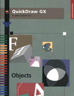

QuickDraw GX Objects
Inside Macintosh: QuickDraw GX Objects gets you started with QuickDraw GX, the object-based graphics programming environment. Read this book before any others in the QuickDraw GX suite to learn how to create powerful and flexible graphics and text-handling applications.Inside Macintosh: QuickDraw GX Objects starts with an overall introduction to QuickDraw GX and its objects, and then describes how you can create and draw graphical elements using the fundamental object types: shape objects, style objects, ink objects, color-related objects, transform objects, view-related objects, tag objects. After reading this book, consult the following books for specific applications of QuickDraw GX objects:
- Inside Macintosh: QuickDraw GX Graphics for graphics programming
- Inside Macintosh: QuickDraw GX Typography for text handling
- Inside Macintosh: QuickDraw GX Printing for printing graphics and text
Availability Click below to obtain Inside Macintosh: QuickDraw GX Objects in any of the following formats.

|
Acrobat (6212K) |